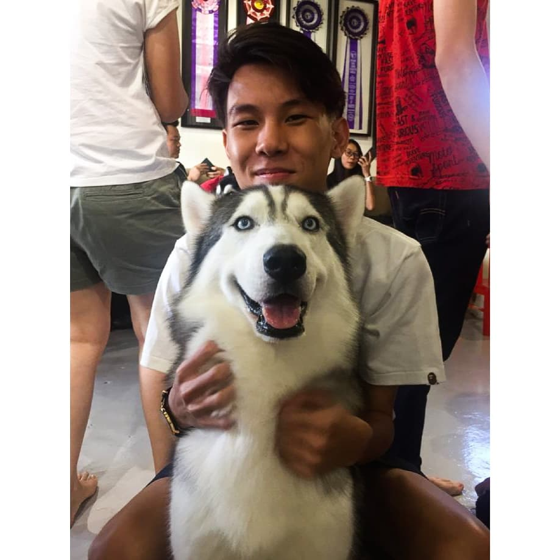

Hello! My name is
Derek,
I am a 4th Year IT Student @ York University


Hello! My name is
I am a 4th Year IT Student @ York University
I am a highly driven individual with a passion for learning, with an avid interest in anything IT or tech related, e-commerce, marketing and the intricate world of entrepreneurship. Currently, I am completing my Bachelor of Commerce in Information Technology with Specialized Honours in E-Commerce Development. I can be a valuable addition to any team as I strongly believe in collaboration and teamwork. I thrive in environments where I can collaborate with others whether as a team member or as the team leader. I am always willing to help and grow together towards a shared objective.
Equitable Bank | 4 Months
August 2023 – December 2023
351 King St East, Toronto, ON
Computing Support Assistant | 1 Year
2022 – April 2023
York University, Toronto, ON
Specialized Honors Information Technology (E-Commerce Development) | 2021 - 2024
York University, Toronto, ON